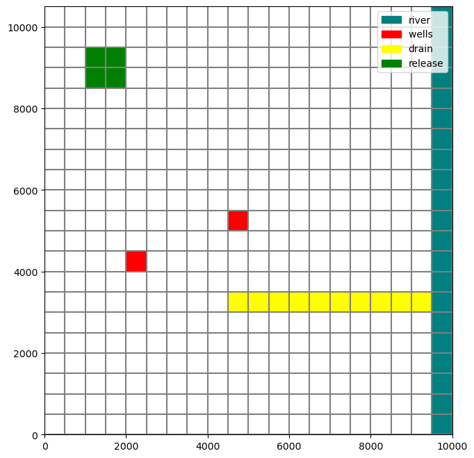
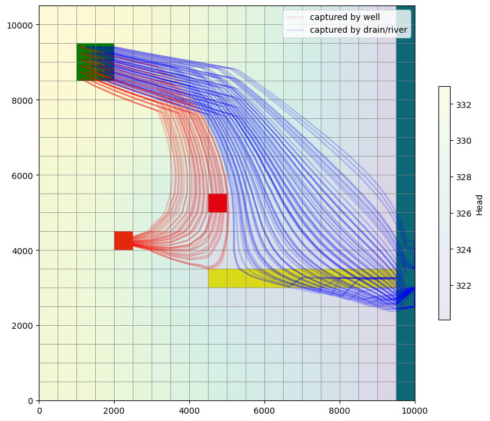

Note
Using MODPATH 7 with structured grids (transient example)
This notebook reproduces example 3a from the MODPATH 7 documentation, demonstrating a transient MODFLOW 6 simulation based on the same flow system as the basic structured and unstructured examples. Particles are released at 10 20-day intervals for the first 200 days of the simulation. 2 discharge wells are added 100,000 days into the simulation and pump at a constant rate for the remainder. There are three stress periods:
Stress period |
Type |
Time steps |
Length (days) |
|---|---|---|---|
1 |
steady-state |
1 |
100000 |
2 |
transient |
10 |
36500 |
3 |
steady-state |
1 |
100000 |
Setting up the simulation
First import FloPy and set up a temporary workspace.
[1]:
import sys
import os
from os.path import join
from pathlib import Path
from tempfile import TemporaryDirectory
import numpy as np
import matplotlib as mpl
import matplotlib.pyplot as plt
proj_root = Path.cwd().parent.parent
# run installed version of flopy or add local path
try:
import flopy
except:
sys.path.append(proj_root)
import flopy
print(sys.version)
print("numpy version: {}".format(np.__version__))
print("matplotlib version: {}".format(mpl.__version__))
print("flopy version: {}".format(flopy.__version__))
temp_dir = TemporaryDirectory()
sim_name = "mp7_ex03a_mf6"
workspace = Path(temp_dir.name) / sim_name
3.10.10 | packaged by conda-forge | (main, Mar 24 2023, 20:08:06) [GCC 11.3.0]
numpy version: 1.24.3
matplotlib version: 3.7.1
flopy version: 3.3.7
Define flow model data.
[2]:
nlay, nrow, ncol = 3, 21, 20
delr = delc = 500.0
top = 400.0
botm = [220.0, 200.0, 0.0]
laytyp = [1, 0, 0]
kh = [50.0, 0.01, 200.0]
kv = [10.0, 0.01, 20.0]
rch = 0.005
riv_h = 320.0
riv_z = 317.0
riv_c = 1.0e5
Define well data. Although this notebook will refer to layer/row/column indices starting at 1, indices in FloPy (and more generally in Python) are zero-based. A negative discharge indicates pumping, while a positive value indicates injection.
[3]:
wells = [
# layer, row, col, discharge
(0, 10, 9, -75000),
(2, 12, 4, -100000),
]
Define the drain location.
[4]:
drain = (0, 14, (9, 20))
Configure locations for particle tracking to terminate. We have three explicitly defined termination zones:
2: the well in layer 1, at row 11, column 103: the well in layer 3, at row 13, column 54: the drain in layer 1, running through row 15 from column 10-20
MODFLOW 6 reserves zone number 1 to indicate that particles may move freely within the zone.
The river running through column 20 is also a termination zone, but it doesn’t need to be defined separately since we are using the RIV package.
[5]:
zone_maps = []
# zone 1 is the default (non-terminating regions)
def fill_zone_1():
return np.ones((nrow, ncol), dtype=np.int32)
# zone map for layer 1
za = fill_zone_1()
za[wells[0][1:3]] = 2
za[drain[1], drain[2][0] : drain[2][1]] = 4
zone_maps.append(za)
# constant layer 2 (zone 1)
zone_maps.append(1)
# zone map for layer 3
za = fill_zone_1()
za[wells[1][1:3]] = 3
zone_maps.append(za)
Define particles to track. We release particles from the top of a 2x2 square of cells in the upper left of the model grid’s top layer.
[6]:
rel_minl = rel_maxl = 1
rel_minr = 2
rel_maxr = 3
rel_minc = 2
rel_maxc = 3
sd = flopy.modpath.CellDataType(
drape=0
) # particles added at top of cell (no drape)
pd = flopy.modpath.LRCParticleData(
subdivisiondata=[sd],
lrcregions=[
[[rel_minl, rel_minr, rel_minc, rel_maxl, rel_maxr, rel_maxc]]
],
)
pg = flopy.modpath.ParticleGroupLRCTemplate(
particlegroupname="PG1", particledata=pd, filename=f"{sim_name}.pg1.sloc"
)
pgs = [pg]
defaultiface = {"RECHARGE": 6, "ET": 6}
Create the MODFLOW 6 simulation.
[7]:
# simulation
sim = flopy.mf6.MFSimulation(
sim_name=sim_name, exe_name="mf6", version="mf6", sim_ws=workspace
)
# temporal discretization
nper = 3
pd = [
# perlen, nstp, tsmult
(100000, 1, 1),
(36500, 10, 1),
(100000, 1, 1),
]
tdis = flopy.mf6.modflow.mftdis.ModflowTdis(
sim, pname="tdis", time_units="DAYS", nper=nper, perioddata=pd
)
# groundwater flow (gwf) model
model_nam_file = "{}.nam".format(sim_name)
gwf = flopy.mf6.ModflowGwf(
sim, modelname=sim_name, model_nam_file=model_nam_file, save_flows=True
)
# iterative model solver (ims) package
ims = flopy.mf6.modflow.mfims.ModflowIms(
sim,
pname="ims",
complexity="SIMPLE",
outer_dvclose=1e-6,
inner_dvclose=1e-6,
rcloserecord=1e-6,
)
# grid discretization
dis = flopy.mf6.modflow.mfgwfdis.ModflowGwfdis(
gwf,
pname="dis",
nlay=nlay,
nrow=nrow,
ncol=ncol,
length_units="FEET",
delr=delr,
delc=delc,
top=top,
botm=botm,
)
# initial conditions
ic = flopy.mf6.modflow.mfgwfic.ModflowGwfic(gwf, pname="ic", strt=top)
# node property flow
npf = flopy.mf6.modflow.mfgwfnpf.ModflowGwfnpf(
gwf, pname="npf", icelltype=laytyp, k=kh, k33=kv
)
# recharge
rch = flopy.mf6.modflow.mfgwfrcha.ModflowGwfrcha(gwf, recharge=rch)
# wells
def no_flow(w):
return w[0], w[1], w[2], 0
wel = flopy.mf6.modflow.mfgwfwel.ModflowGwfwel(
gwf,
maxbound=1,
stress_period_data={0: [no_flow(w) for w in wells], 1: wells, 2: wells},
)
# river
rd = [[(0, i, ncol - 1), riv_h, riv_c, riv_z] for i in range(nrow)]
flopy.mf6.modflow.mfgwfriv.ModflowGwfriv(
gwf, stress_period_data={0: rd, 1: rd, 2: rd}
)
# drain (set auxiliary IFACE var to 6 for top of cell)
dd = [
[drain[0], drain[1], i + drain[2][0], 322.5, 100000.0, 6]
for i in range(drain[2][1] - drain[2][0])
]
drn = flopy.mf6.modflow.mfgwfdrn.ModflowGwfdrn(gwf, stress_period_data={0: dd})
# output control
headfile = "{}.hds".format(sim_name)
head_record = [headfile]
budgetfile = "{}.cbb".format(sim_name)
budget_record = [budgetfile]
saverecord = [("HEAD", "ALL"), ("BUDGET", "ALL")]
oc = flopy.mf6.modflow.mfgwfoc.ModflowGwfoc(
gwf,
pname="oc",
saverecord=saverecord,
head_filerecord=head_record,
budget_filerecord=budget_record,
)
Take a look at the model grid before running the simulation.
[8]:
def add_release(ax):
ax.add_patch(
mpl.patches.Rectangle(
(2 * delc, (nrow - 2) * delr),
1000,
-1000,
facecolor="green",
)
)
def add_legend(ax):
ax.legend(
handles=[
mpl.patches.Patch(color="teal", label="river"),
mpl.patches.Patch(color="red", label="wells "),
mpl.patches.Patch(color="yellow", label="drain"),
mpl.patches.Patch(color="green", label="release"),
]
)
fig = plt.figure(figsize=(8, 8))
ax = fig.add_subplot(1, 1, 1, aspect="equal")
mv = flopy.plot.PlotMapView(model=gwf)
mv.plot_grid()
mv.plot_bc("DRN")
mv.plot_bc("RIV")
mv.plot_bc("WEL", plotAll=True) # include both wells (1st and 3rd layer)
add_release(ax)
add_legend(ax)
plt.show()

Running the simulation
Run the MODFLOW 6 flow simulation.
[9]:
sim.write_simulation()
success, buff = sim.run_simulation(silent=True, report=True)
assert success, "Failed to run simulation."
for line in buff:
print(line)
writing simulation...
writing simulation name file...
writing simulation tdis package...
writing solution package ims...
writing model mp7_ex03a_mf6...
writing model name file...
writing package dis...
writing package ic...
writing package npf...
writing package rcha_0...
writing package wel_0...
INFORMATION: maxbound in ('gwf6', 'wel', 'dimensions') changed to 2 based on size of stress_period_data
writing package riv_0...
INFORMATION: maxbound in ('gwf6', 'riv', 'dimensions') changed to 21 based on size of stress_period_data
writing package drn_0...
INFORMATION: maxbound in ('gwf6', 'drn', 'dimensions') changed to 11 based on size of stress_period_data
writing package oc...
MODFLOW 6
U.S. GEOLOGICAL SURVEY MODULAR HYDROLOGIC MODEL
VERSION 6.4.1 Release 12/09/2022
MODFLOW 6 compiled Apr 12 2023 19:02:29 with Intel(R) Fortran Intel(R) 64
Compiler Classic for applications running on Intel(R) 64, Version 2021.7.0
Build 20220726_000000
This software has been approved for release by the U.S. Geological
Survey (USGS). Although the software has been subjected to rigorous
review, the USGS reserves the right to update the software as needed
pursuant to further analysis and review. No warranty, expressed or
implied, is made by the USGS or the U.S. Government as to the
functionality of the software and related material nor shall the
fact of release constitute any such warranty. Furthermore, the
software is released on condition that neither the USGS nor the U.S.
Government shall be held liable for any damages resulting from its
authorized or unauthorized use. Also refer to the USGS Water
Resources Software User Rights Notice for complete use, copyright,
and distribution information.
Run start date and time (yyyy/mm/dd hh:mm:ss): 2023/05/04 16:06:43
Writing simulation list file: mfsim.lst
Using Simulation name file: mfsim.nam
Solving: Stress period: 1 Time step: 1
Solving: Stress period: 2 Time step: 1
Solving: Stress period: 2 Time step: 2
Solving: Stress period: 2 Time step: 3
Solving: Stress period: 2 Time step: 4
Solving: Stress period: 2 Time step: 5
Solving: Stress period: 2 Time step: 6
Solving: Stress period: 2 Time step: 7
Solving: Stress period: 2 Time step: 8
Solving: Stress period: 2 Time step: 9
Solving: Stress period: 2 Time step: 10
Solving: Stress period: 3 Time step: 1
Run end date and time (yyyy/mm/dd hh:mm:ss): 2023/05/04 16:06:43
Elapsed run time: 0.070 Seconds
Normal termination of simulation.
Create and run MODPATH 7 particle tracking model in combined mode, which includes both pathline and timeseries.
[10]:
# create modpath files
mp = flopy.modpath.Modpath7(
modelname=f"{sim_name}_mp",
flowmodel=gwf,
exe_name="mp7",
model_ws=workspace,
)
mpbas = flopy.modpath.Modpath7Bas(mp, porosity=0.1, defaultiface=defaultiface)
mpsim = flopy.modpath.Modpath7Sim(
mp,
simulationtype="combined",
trackingdirection="forward",
weaksinkoption="pass_through",
weaksourceoption="pass_through",
budgetoutputoption="summary",
referencetime=[0, 0, 0.9],
timepointdata=[10, 20.0], # release every 20 days, for 200 days
zonedataoption="on",
zones=zone_maps,
particlegroups=pgs,
)
mp.write_input()
success, buff = mp.run_model(silent=True, report=True)
assert success
for line in buff:
print(line)
MODPATH Version 7.2.001
Program compiled Apr 12 2023 19:05:18 with IFORT compiler (ver. 20.21.7)
Run particle tracking simulation ...
Processing Time Step 1 Period 1. Time = 1.00000E+05 Steady-state flow
Processing Time Step 1 Period 2. Time = 1.03650E+05 Steady-state flow
Processing Time Step 2 Period 2. Time = 1.07300E+05 Steady-state flow
Processing Time Step 3 Period 2. Time = 1.10950E+05 Steady-state flow
Processing Time Step 4 Period 2. Time = 1.14600E+05 Steady-state flow
Processing Time Step 5 Period 2. Time = 1.18250E+05 Steady-state flow
Processing Time Step 6 Period 2. Time = 1.21900E+05 Steady-state flow
Processing Time Step 7 Period 2. Time = 1.25550E+05 Steady-state flow
Processing Time Step 8 Period 2. Time = 1.29200E+05 Steady-state flow
Processing Time Step 9 Period 2. Time = 1.32850E+05 Steady-state flow
Processing Time Step 10 Period 2. Time = 1.36500E+05 Steady-state flow
Processing Time Step 1 Period 3. Time = 2.36500E+05 Steady-state flow
Particle Summary:
0 particles are pending release.
0 particles remain active.
0 particles terminated at boundary faces.
0 particles terminated at weak sink cells.
0 particles terminated at weak source cells.
108 particles terminated at strong source/sink cells.
0 particles terminated in cells with a specified zone number.
0 particles were stranded in inactive or dry cells.
0 particles were unreleased.
0 particles have an unknown status.
Normal termination.
Inspecting results
First we need the particle termination locations.
[11]:
wel_locs = [w[0:3] for w in wells]
riv_locs = [(0, i, 19) for i in range(20)]
drn_locs = [(drain[0], drain[1], d) for d in range(drain[2][0], drain[2][1])]
wel_nids = gwf.modelgrid.get_node(wel_locs)
riv_nids = gwf.modelgrid.get_node(riv_locs)
drn_nids = gwf.modelgrid.get_node(drn_locs)
Next, load pathline data from the MODPATH 7 pathline output file, filtering by termination location.
[12]:
fpth = workspace / f"{sim_name}_mp.mppth"
p = flopy.utils.PathlineFile(fpth)
pl1 = p.get_destination_pathline_data(wel_nids, to_recarray=True)
pl2 = p.get_destination_pathline_data(riv_nids + drn_nids, to_recarray=True)
Load endpoint data from the MODPATH 7 endpoint output file.
[13]:
fpth = workspace / f"{sim_name}_mp.mpend"
e = flopy.utils.EndpointFile(fpth)
ep1 = e.get_destination_endpoint_data(dest_cells=wel_nids)
ep2 = e.get_destination_endpoint_data(dest_cells=riv_nids + drn_nids)
Extract head data from the GWF model’s output files.
[14]:
hf = flopy.utils.HeadFile(workspace / f"{sim_name}.hds")
head = hf.get_data()
Plot heads over a map view of the model, then add particle starting points and pathlines. The apparent number of particle starting locations is less than the total number of particles because a separate particle begins at each location every 20 days during the release period at the beginning of the simulation.
[15]:
fig = plt.figure(figsize=(10, 10))
ax = fig.add_subplot(1, 1, 1, aspect="equal")
mv = flopy.plot.PlotMapView(model=gwf)
mv.plot_grid(lw=0.5)
mv.plot_bc("DRN")
mv.plot_bc("RIV")
mv.plot_bc("WEL", plotAll=True)
hd = mv.plot_array(head, alpha=0.1)
cb = plt.colorbar(hd, shrink=0.5)
cb.set_label("Head")
mv.plot_pathline(
pl1, layer="all", alpha=0.1, colors=["red"], lw=2, label="captured by well"
)
mv.plot_pathline(
pl2,
layer="all",
alpha=0.1,
colors=["blue"],
lw=2,
label="captured by drain/river",
)
add_release(ax)
mv.ax.legend()
plt.show()

Clean up the temporary directory.
[16]:
try:
# ignore PermissionError on Windows
temp_dir.cleanup()
except:
pass